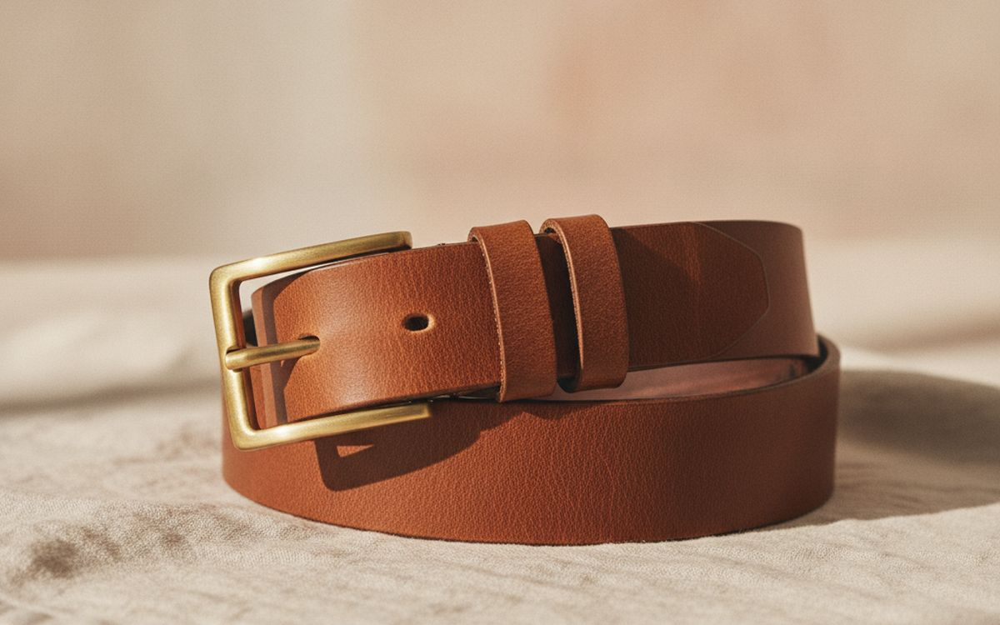
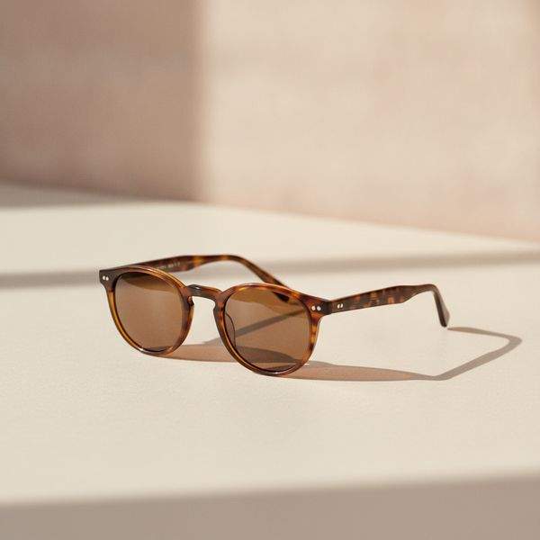
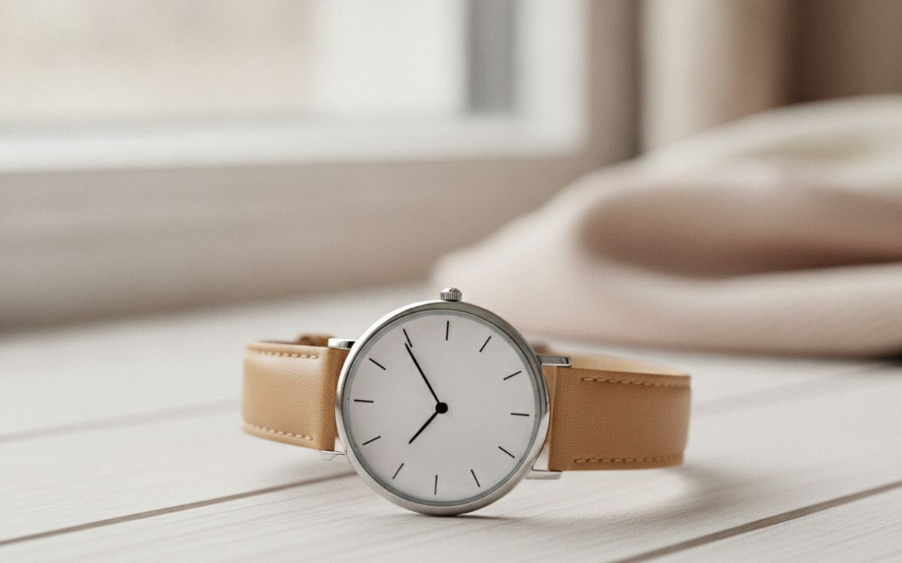
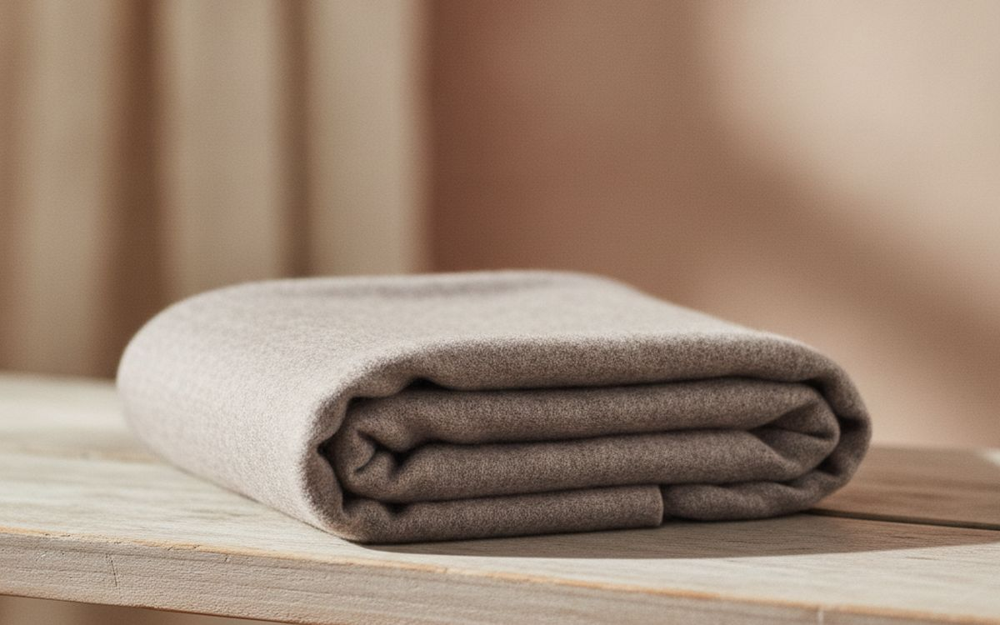
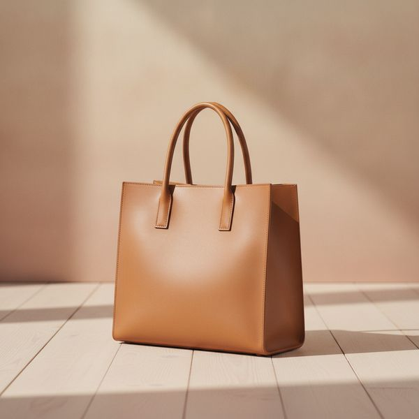
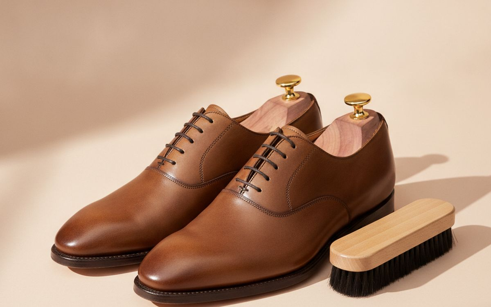
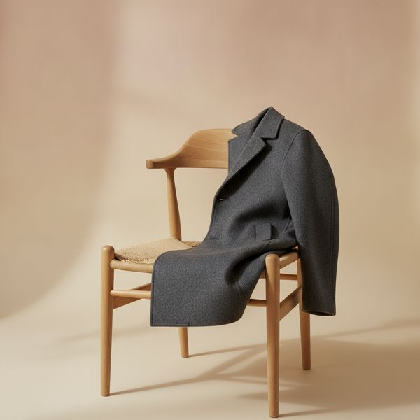
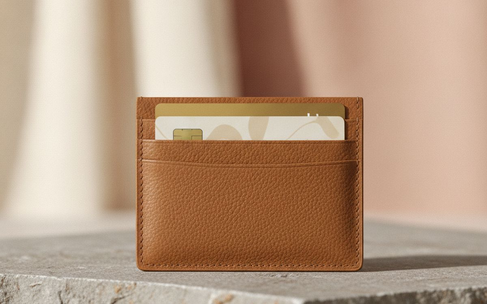
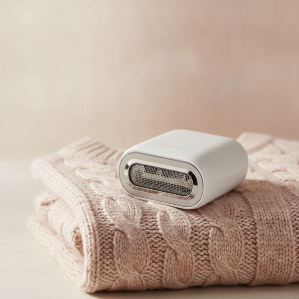
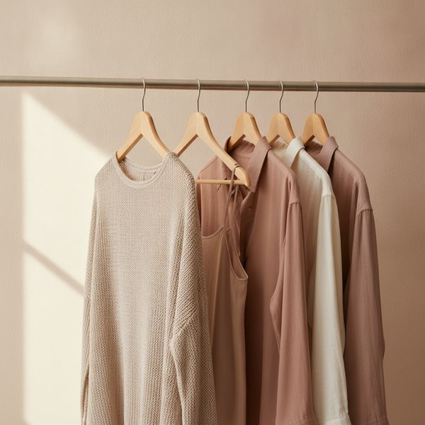

Diez piezas que realzan un conjunto normal, elegidas por su durabilidad y no por estar a la moda.
Los accesorios tienen un impacto desproporcionado. Un conjunto sencillo con un buen cinturón, un reloj decente y unos zapatos adecuados se percibe como cuidado; el mismo conjunto con versiones desgastadas de esos tres elementos parece descuidado. La ropa apenas ha cambiado.
Ese poder transformador es la razón por la que esta lista se centra en cosas que duran. Los accesorios de tendencia pasan de moda rápido y son baratos por algo. Las piezas que siguen son las que seguirán viéndose bien dentro de cinco años, lo que también hace que su valor por uso sea mucho mayor de lo que sugiere su precio.
Una nota sincera sobre el ajuste y el gusto: podemos decirte qué está bien hecho y qué dura. No podemos decirte qué te sienta bien, y cualquiera que venda una regla universal al respecto está improvisando. Cuando una elección es puramente personal, lo indicamos.
Los precios son aproximados en el momento de redactar este artículo. Varios de estos artículos es mucho mejor comprarlos de segunda mano, e indicamos cuáles.
Aviso. Los enlaces de esta página son de afiliados. Si compras a través de uno podemos ganar una comisión sin coste adicional para ti. No influye en qué entra en esta lista ni en su orden.
Cómo lo elegimos
Priorizamos la confección duradera y las formas que no pasan de moda por encima de las tendencias de la temporada. Nos basamos en pruebas de materiales publicadas, estándares de confección tradicionales y reseñas de usuarios a largo plazo, y no hemos usado personalmente todos los artículos de esta lista. No te decimos qué te queda bien (eso es una cuestión de gusto) y, cuando una elección es personal, lo indicamos en lugar de fingir que hay una respuesta correcta.
De un vistazo
Los precios son aproximados en el momento de escribir y cambian a menudo.
Las recomendaciones

1
Cómpralo una vez, pero cómpralo bienUn cinturón de piel de plena flor
$50–120
La mayoría de los cinturones que se venden son de 'piel regenerada' o 'piel genuina', que a pesar del nombre es la de peor calidad: son restos de piel triturados y pegados para formar una lámina. Se agrieta y se despega en uno o dos años, motivo por el cual la gente cambia de cinturón constantemente. La piel de plena flor es la capa superior de la piel sin cortar y se ablanda en lugar de degradarse, por lo que se ve mejor a los cinco años que cuando era nueva. Busca bordes cosidos en lugar de pegados y una hebilla sujeta con tornillos en lugar de remaches para poder reemplazarla. Un cinturón de esta calidad dura más que seis baratos y, a la larga, cuesta menos.
Por qué está aquí
- Mejora con el tiempo en lugar de degradarse
- La hebilla reemplazable alarga aún más su vida útil
- Más barato por año que comprar cinturones malos repetidamente
Conviene saber
- La 'piel genuina' es de baja calidad, a pesar del nombre
- Rígido durante las primeras semanas

2
Fíjate en la protección, no en el tinteGafas de sol con protección UV real
$40–200
Unas lentes oscuras sin filtro UV son peores que no llevar gafas de sol, porque el tinte hace que las pupilas se dilaten y dejen pasar más radiación ultravioleta al ojo. Busca la etiqueta UV400 o una que indique un bloqueo del 100 % de los rayos UVA y UVB: esa es la especificación que importa, y no tiene relación con lo oscuras o caras que sean las lentes. La polarización es una característica aparte que reduce el deslumbramiento del agua y las carreteras y es realmente útil para conducir. La forma de la montura es totalmente personal, una buena razón para probárselas en lugar de comprarlas a partir de una foto.
Por qué está aquí
- UV400 es una especificación verificable y relevante
- La polarización realmente ayuda al conducir
- Las formas clásicas no pasan de moda
Conviene saber
- Un tinte oscuro sin filtro UV es directamente perjudicial
- La forma de la montura es personal: pruébatelas antes de comprar

3
Un reloj, varios estilosUn reloj sencillo con correa intercambiable
$100–350
Un reloj analógico sencillo con una esfera limpia combina con todo y pasa de moda mucho más lentamente que uno con un diseño recargado. La característica que se suele pasar por alto son los pasadores de liberación rápida, que permiten cambiar la correa en segundos y sin herramientas: una correa de piel y una de tela convierten un reloj en dos por unas veinte libras. Compara el diámetro de la caja con tu muñeca en lugar de comprar por modas, ya que el tamaño de los relojes varía de una década a otra. Un movimiento de cuarzo es más preciso y mucho más barato de mantener que uno mecánico; el mecánico es un hobby, no una mejora.
Por qué está aquí
- Las correas de liberación rápida convierten un reloj en varios
- Las esferas sencillas pasan de moda muy lentamente
- El cuarzo es preciso y su mantenimiento es barato
Conviene saber
- El tamaño de la caja es personal: mídete la muñeca
- Los movimientos mecánicos necesitan revisiones periódicas

4
La mayor calidez por gramoUna bufanda de lana merina o de cordero
$40–120
Una bufanda es la forma más barata de hacer que un abrigo sea más cálido, porque la mayor parte del calor se pierde por el cuello, y también es la forma más fácil de añadir color a un atuendo por lo demás sencillo. La lana merina es lo suficientemente fina como para no picar, que es la principal queja de la gente sobre la lana, y regula la temperatura mucho mejor que el acrílico, que atrapa el sudor y luego se siente frío. Un color neutro es la compra más útil si solo tienes una; uno vivo es mejor si ya tienes tres. Lávala poco, en frío y sécala en horizontal.
Por qué está aquí
- Cierra la mayor fuga de calor de un abrigo
- La lana merina no pica y maneja bien la humedad
- Una forma barata de añadir color a la ropa sencilla
Conviene saber
- La lana requiere un lavado cuidadoso y secado en horizontal
- Polillas: guárdala bien en verano

5
Sustituye a varios bolsosUn bolso 'tote' estructurado de piel o lona
$80–250
El bolso que se usa a diario es el que tiene espacio para un portátil, no se deforma cuando está medio vacío y no desentona ni en el trabajo ni en una cena. La clave es la estructura: un 'tote' sin estructura se hunde y todo acaba en el fondo, por eso se dejan de usar. Busca una base plana, asas reforzadas y una caída de la correa que te permita llevarlo al hombro cómodamente con un abrigo puesto. Comprueba que el interior tenga al menos un bolsillo con cremallera; un único compartimento abierto significa tener que revolver todo el bolso para encontrar las llaves.
Por qué está aquí
- Sirve tanto para el trabajo como para salir por la noche
- La estructura evita que todo se hunda en el fondo
- La buena piel mejora con el uso
Conviene saber
- Pesa incluso antes de meterle nada
- Los diseños abiertos no son seguros entre multitudes

6
Duplica la vida de los buenos zapatosHormas para zapatos y un buen cepillo
$30–70
Este es el consejo con mayor impacto de la lista y nadie lo sigue. Los zapatos de piel absorben una cantidad sorprendente de humedad durante el día y luego se secan con la forma arrugada en que se dejaron, y esas arrugas son por donde la piel acaba agrietándose. Las hormas de cedro mantienen la forma y extraen la humedad durante la noche. Un cepillo y un acondicionador ocasional hacen el resto. Juntos, prácticamente duplican la vida útil de un par de buenos zapatos por el precio de una comida para llevar, lo que los convierte en una inversión más rentable que casi cualquier prenda de esta página.
Por qué está aquí
- Prácticamente duplica la vida de los zapatos de piel
- El cedro absorbe la humedad y controla el olor
- Cuesta una fracción de lo que valen los zapatos que protege
Conviene saber
- Solo merece la pena para el calzado de piel, no para las zapatillas
- Para que funcione, tiene que convertirse en un hábito diario

7
Donde la segunda mano gana por goleadaUn abrigo de calidad de segunda mano
$80–300 used
Un abrigo de lana bien hecho es una de las pocas prendas que realmente dura décadas y, como las siluetas de los abrigos cambian lentamente, uno de hace diez años rara vez parece anticuado. Esta combinación hace que el mercado de segunda mano sea especialmente bueno en este caso: puedes comprar una calidad de confección que costaría cuatro veces más si fuera nueva. Revisa el forro y las costuras de las axilas, que se estropean antes que el tejido exterior y son caras de reparar. Luego, llévalo a arreglar: los hombros deben quedar bien, pero el largo de las mangas y el entalle del cuerpo son ajustes baratos, y el ajuste es lo que hace que un abrigo parezca caro.
Por qué está aquí
- Compra calidad de confección por una cuarta parte del precio original
- Las formas de los abrigos pasan de moda muy lentamente
- Los arreglos son baratos y transforman el ajuste
Conviene saber
- Los hombros deben quedar bien, no es un arreglo barato
- Revisa el forro y las costuras de las axilas antes de comprar

8
Sustituye a la cartera abarrotadaUn tarjetero de piel fino
$30–90
La cartera tradicional de dos cuerpos, llena de recibos, abulta, deforma la línea del bolsillo y, si la llevas en el bolsillo trasero y te sientas sobre ella todo el día, se asocia realmente con problemas de postura y molestias de espalda. Un tarjetero te obliga a la útil disciplina de llevar tres o cuatro tarjetas en lugar de quince. De nuevo, busca piel de plena flor y bordes cosidos en lugar de pegados. Si llevas tarjetas 'contactless', ten en cuenta que tener varias juntas puede confundir al lector; un tarjetero que las separe, o simplemente sacar una, lo soluciona.
Por qué está aquí
- Mucho menos bulto en el bolsillo
- Te obliga a llevar solo lo que usas
- La buena piel envejece bien
Conviene saber
- Los diseños más pequeños no tienen espacio para billetes
- Varias tarjetas 'contactless' juntas pueden confundir a los lectores

9
Hace que la ropa vieja parezca nuevaUn quitapelusas eléctrico
$20–40
Las bolitas (o 'pilling') son lo que hace que un jersey parezca viejo, y es un problema casi puramente estético: la prenda por debajo suele estar bien. Un quitapelusas a pilas elimina esas bolitas en pocos minutos y le quita años de encima a las prendas de punto, abrigos y tapicerías. Es el artículo más barato de esta página y probablemente el que tiene la mejor relación entre coste y mejora visible. Úsalo sobre una superficie plana, no con la prenda puesta, mantenlo en movimiento y empieza con el ajuste más bajo en tejidos delicados, ya que es realmente posible hacer un agujero en el punto fino.
Por qué está aquí
- Le quita años de encima a las prendas de punto
- La mejora visible más barata de esta lista
- Funciona también en tapicerías y abrigos
Conviene saber
- Puede cortar el punto fino si se usa sin cuidado
- Necesita pilas o cargarse

10
Baratas y evitan dañosPerchas de madera, al menos para abrigos y trajes
$25–60
Las perchas finas de alambre y plástico concentran el peso de una prenda en dos puntos estrechos y, al cabo de un año, dejan marcas permanentes en los hombros de las prendas de punto y deforman la línea de los hombros de una chaqueta, la única parte de un traje que no se puede reparar de forma asequible. Las perchas anchas de madera distribuyen el peso por la forma natural del hombro. No las necesitas para todo; úsalas para abrigos, chaquetas y cualquier prenda estructurada, y guarda las de plástico para las camisetas. Las prendas de punto es mejor doblarlas que colgarlas, sea cual sea la percha.
Por qué está aquí
- Evitan la deformación permanente de los hombros
- El daño que evitan no tiene un arreglo barato
- Solo se necesitan para prendas estructuradas
Conviene saber
- Ocupan bastante más espacio en la barra
- Las prendas de punto deben doblarse de todos modos
Preguntas frecuentes
¿Qué accesorio marca la mayor diferencia por sí solo?
Unos zapatos de tu talla y bien cuidados. La gente se fija en el calzado desgastado antes que en cualquier otra cosa, y unas hormas y un cepillo cuestan muy poco en comparación con el par que protegen.
¿La 'piel genuina' es de buena calidad?
No. A pesar del nombre, es una de las calidades más bajas, hecha de restos de piel prensados. La de plena flor es la capa superior de la piel y la que dura. La 'top-grain' o flor corregida está entre ambas.
¿Qué merece la pena comprar de segunda mano?
Abrigos, bolsos de piel y prendas de punto de calidad; todos duran mucho más de lo que un solo dueño los conserva. Compra los zapatos nuevos a menos que sepas que te quedan bien, ya que un par usado ya se ha amoldado al pie de otra persona.
¿Cómo evito que los jerséis parezcan viejos?
Un quitapelusas para las bolitas, doblarlos en lugar de colgarlos para que los hombros mantengan su forma y lavarlos con menos frecuencia y a menor temperatura de lo que probablemente haces. La lana necesita airearse mucho más que lavarse.
← Todas las guías
Hemos solicitado unirnos al Programa de Afiliados de Amazon. Todavía no somos Afiliados de Amazon y hoy no ganamos nada con los enlaces a Amazon. Como afiliados de AliExpress, ganamos por las compras que cumplen los requisitos. Los precios y la disponibilidad son correctos en la fecha de publicación y pueden cambiar.